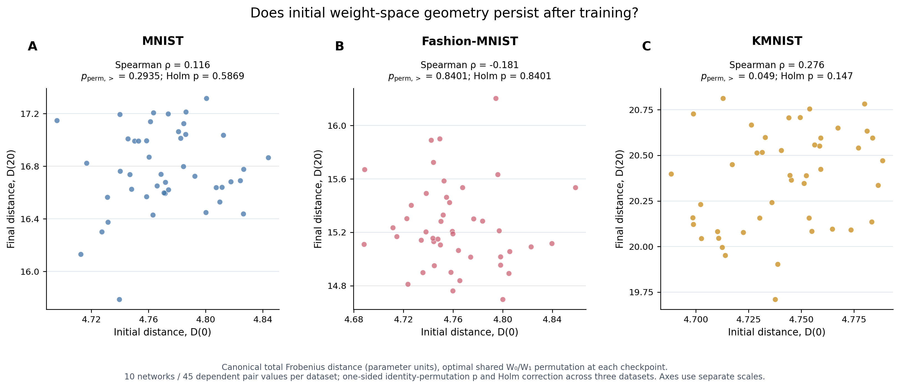
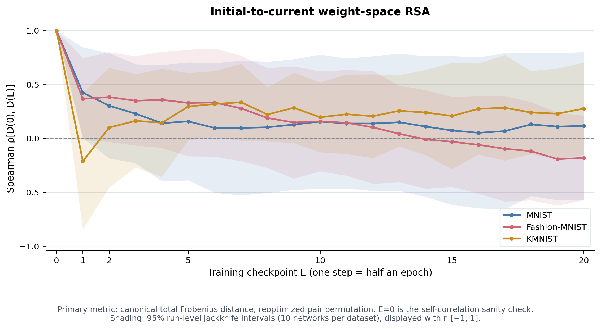
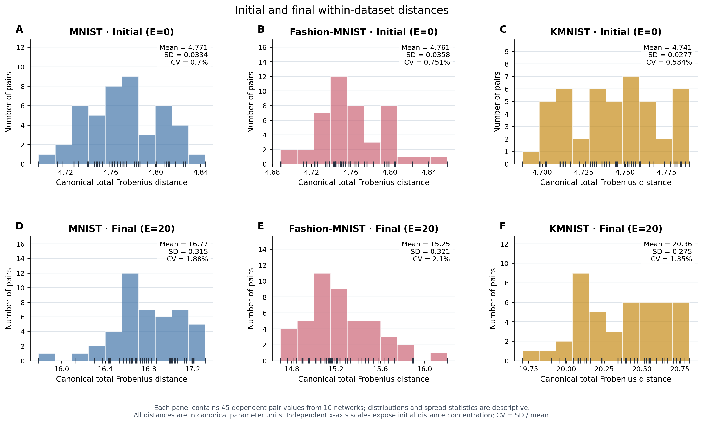
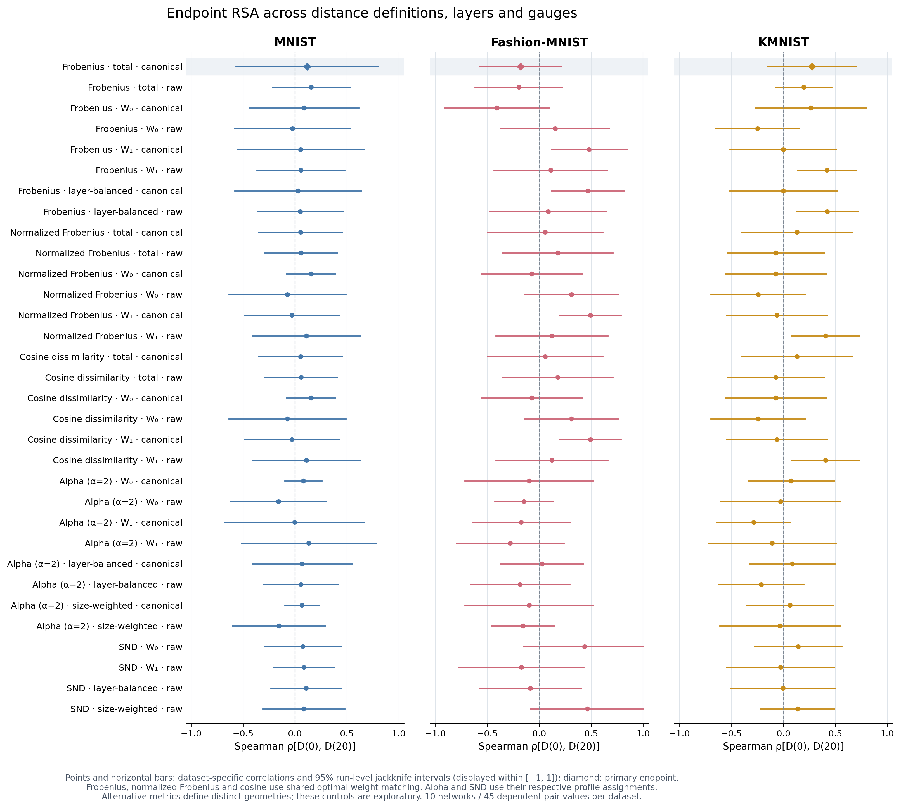
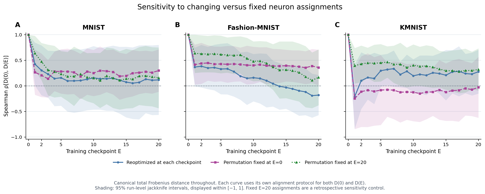
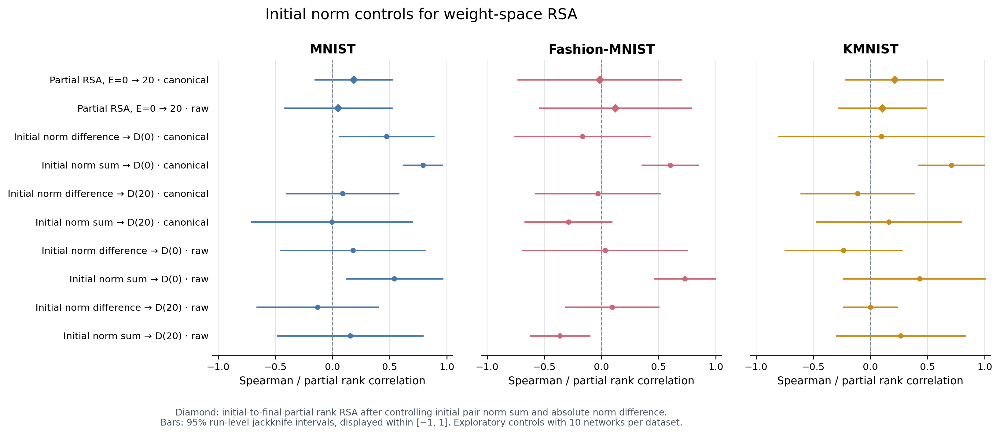

01_RSA - Initialisierung und Endzustand01_RSA: Initialisierung und Endzustand
Das vorgegebene Kriterium eines robusten, über die drei Datensätze reproduzierbaren positiven Zusammenhangs ist nicht erfüllt.
30 Netze · 3 Datensätze · 21 Checkpoints · 10.000 Identitätspermutationen je Datensatz
| Datensatz | ρ bei E20 | p positiv | p positiv, Holm |
|---|
| MNIST | 0.116 | 0.2935 | 0.5869 |
| Fashion-MNIST | -0.181 | 0.8401 | 0.8401 |
| KMNIST | 0.276 | 0.0490 | 0.1470 |
Primär: kanonische Gesamt-Frobenius-Distanz, optimale gemeinsame Neuronenzuordnung. Je Datensatz 10 Netze und 45 abhängige Paare.
Initialisierung gegen Endzustand
Je Datensatz 45 abhängige Paarabstände aus zehn Netzen; primäre kanonische Frobenius-Distanz.

PNG · Vektor-PDF
RSA über das Training
E0 bis E20; Bänder zeigen punktweise 95%-Intervalle aus dem Netzwerk-Jackknife.

PNG · Vektor-PDF
Streuung der Abstände
Anfangs- und Endverteilungen mit getrennten Achsenskalierungen, Standardabweichung und Variationskoeffizient.

PNG · Vektor-PDF
Metrik- und Schichtkontrollen
Die verschiedenen Distanzdefinitionen beschreiben unterschiedliche Geometrien. Alle Werte stammen aus denselben gespeicherten Trainingsläufen.

PNG · Vektor-PDF
Feste und wechselnde Zuordnungen
Für feste Anfangs- oder Endzuordnungen wird dieselbe Paarpermutation auch für die jeweilige Anfangs-RDM verwendet.

PNG · Vektor-PDF
Kontrolle initialer Gewichtsnormen
Deskriptive partielle Rangkorrelation nach Kontrolle von Summe und absoluter Differenz initialer Gesamtnormen.

PNG · Vektor-PDF